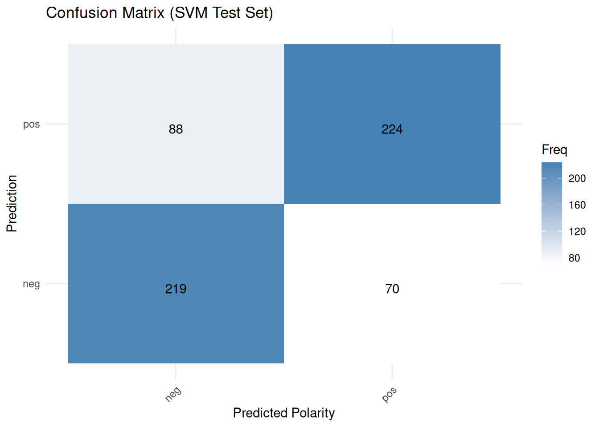
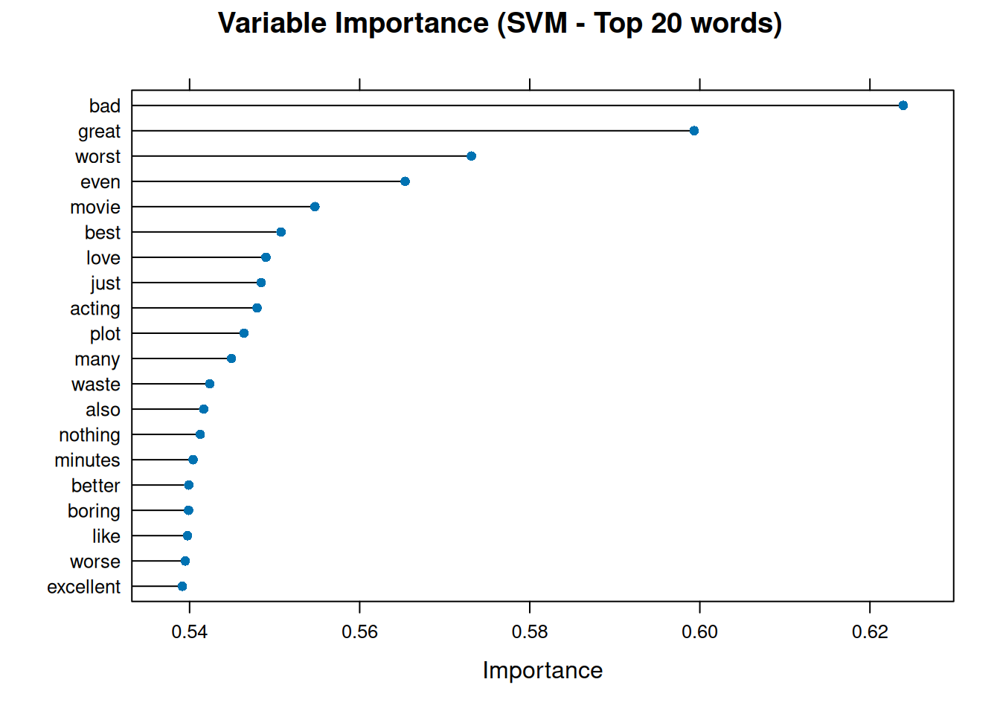
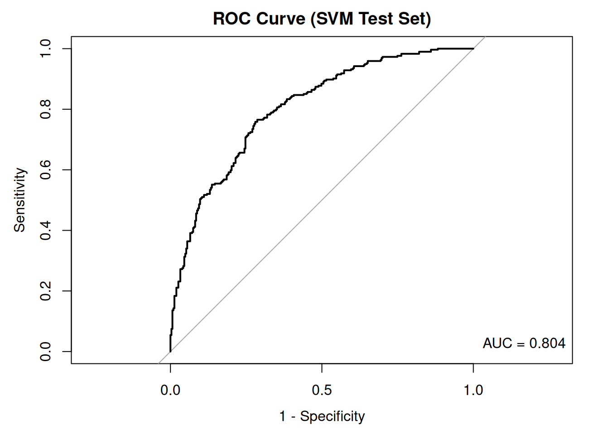
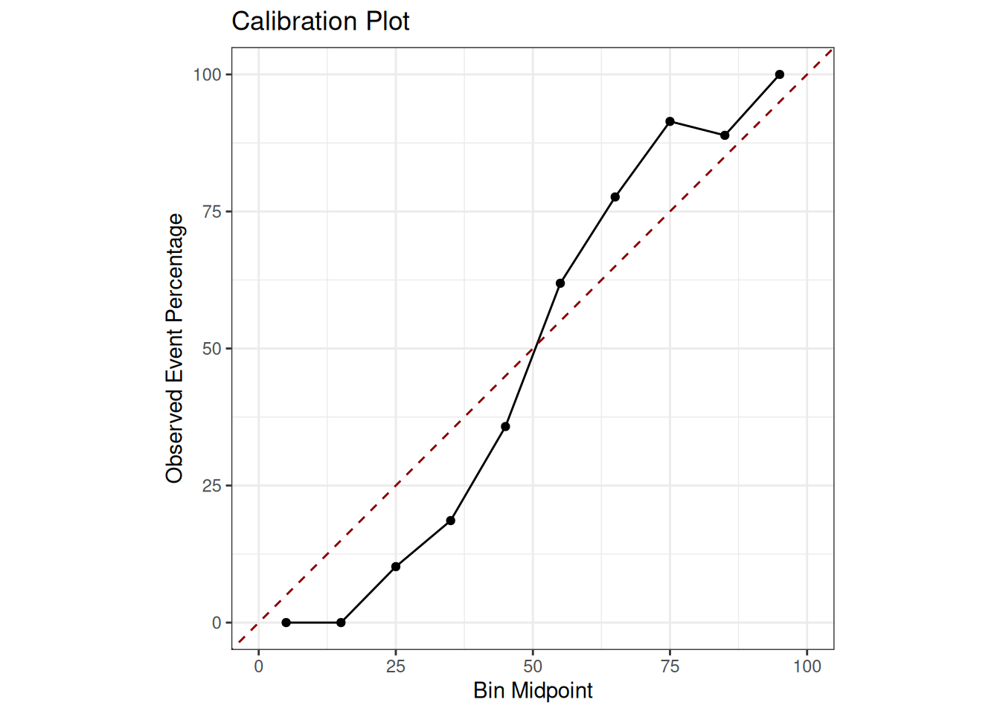

7.1 Support Vector Machines (SVM)
SVMs are powerful supervised learning models that are frequently employed for classification tasks. In text classification, for example, they operate by mapping features of documents, such as word counts, from a document-feature matrix (DFM) into a high-dimensional space. In this space, SVMs identify the optimal hyperplane that most effectively separates documents into different categories.
Imagine you have a piece of paper with red and blue dots scattered on it, and you want to draw a straight line that best separates them. An SVM tries to do something similar but in many more dimensions. Each document can be considered a point in a very high-dimensional space. Each dimension corresponds to a unique word in your vocabulary, and the position of the document along that dimension depends on how frequently that word appears in the document or on other measures, such as TF-IDF. An SVM aims to find the optimal hyperplane that best separates documents into different categories, such as “positive review” versus “negative review”. ‘Best’ means the hyperplane with the largest possible margin — the broadest possible gap — between the closest documents of the different classes. Documents closest to this boundary, which defines the margin, are called ‘support vectors’. SVMs are known for their effectiveness, especially when dealing with many features, which is common in text data since each word can constitute a feature.
In this example, we will use the caret package to train an SVM model for binary polarity classification, use quanteda for text preprocessing and the binary polarity label (“neg” or “pos”) provided by a sample of the Large Movie Review Dataset (data_corpus_LMRD) as the target variable:
set.seed(42)
library(quanteda)
library(quanteda.classifiers)
library(caret) # For model training, evaluation, and cross-validation
library(ggplot2)
library(pROC) # For ROC analysis
corpus_reviews <- corpus_sample(data_corpus_LMRD, 2000) # Sample 2000 reviewsWe need to split our data into separate training and test sets for supervised learning: we will use the training set to build the model and the test set to evaluate its performance on unseen data later on. We will use the polarity variable as our target, ensuring it is a factor as this is the required format for classification tasks in caret. Note that we will filter for documents with non-missing polarity labels before splitting. caret requires factor levels to be valid R variable names (like “neg” and “pos”):
polarity_labels <- factor(corpus_reviews$polarity)
# Identify documents with valid polarity labels
valid_docs_index <- which(!is.na(polarity_labels))
corpus_reviews_valid <- corpus_reviews[valid_docs_index]
polarity_valid <- polarity_labels[valid_docs_index]
polarity_valid <- factor(polarity_valid, levels = c("neg", "pos"))
# Check the distribution of polarity_valid BEFORE splitting
print(table(polarity_valid))## polarity_valid
## neg pos
## 1023 977# Create stratified split indices to ensure both classes are included in
# train/test sets
neg_indices <- which(polarity_valid == "neg")
pos_indices <- which(polarity_valid == "pos")
# Determine the number of instances for train/test per class (70/30 split)
set.seed(42)
train_size_neg <- floor(0.7 * length(neg_indices))
train_size_pos <- floor(0.7 * length(pos_indices))
# Sample indices for training set from each class
train_indices_neg <- sample(neg_indices, size = train_size_neg, replace = FALSE)
train_indices_pos <- sample(pos_indices, size = train_size_pos, replace = FALSE)
# Combine training indices
train_index <- c(train_indices_neg, train_indices_pos)
# The remaining indices are for the test set
all_valid_indices <- seq_along(polarity_valid)
test_index <- all_valid_indices[!all_valid_indices %in% train_index]
# Split the corpus subset and polarity labels into training and testing sets
# using the determined indices
corpus_reviews_train <- corpus_reviews_valid[train_index]
corpus_reviews_test <- corpus_reviews_valid[test_index]
polarity_train <- polarity_valid[train_index]
polarity_test <- polarity_valid[test_index]
# Check the distribution of the split
print("Training set class distribution:")## [1] "Training set class distribution:"## polarity_train
## neg pos
## 716 683## [1] "Testing set class distribution:"## polarity_test
## neg pos
## 307 294Next, we preprocess the training and test corpus subsets to generate the DFMs. Here, it is crucial that the test DFM has the same features and order as the training DFM. The dfm_match() function ensures this. We will then apply common text cleaning steps during tokenisation and convert the DFMs to matrices to ensure compatibility with caret.
# Tokenise and preprocess the training corpus
tokens_train <- tokens(corpus_reviews_train, what = "word", remove_punct = TRUE,
remove_symbols = TRUE, remove_numbers = TRUE, remove_url = TRUE, remove_separators = TRUE) %>%
tokens_tolower() %>%
tokens_select(stopwords("english"), selection = "remove")
# Tokenise and preprocess the test corpus
tokens_test <- tokens(corpus_reviews_test, what = "word", remove_punct = TRUE, remove_symbols = TRUE,
remove_numbers = TRUE, remove_url = TRUE, remove_separators = TRUE) %>%
tokens_tolower() %>%
tokens_select(stopwords("english"), selection = "remove")
# Create DFMs from the processed tokens
dfm_train <- dfm(tokens_train)
dfm_test <- dfm(tokens_test)
# Ensure the test DFM has the same features as the training DFM
dfm_test_matched <- dfm_match(dfm_test, features = featnames(dfm_train))
# Convert DFMs to matrices for caret
matrix_train <- as.matrix(dfm_train)
matrix_test <- as.matrix(dfm_test_matched)
# Remove any zero-variance columns from the training matrix, as caret::train
# can have issues Ensure the test matrix also has these columns removed
nzv_train <- nearZeroVar(matrix_train)
if (length(nzv_train) > 0) {
matrix_train <- matrix_train[, -nzv_train]
matrix_test <- matrix_test[, -nzv_train]
}Now we train the SVM model using caret::train(). caret::train() provides a consistent interface for training various models. We specify method = "svmLinear" for a linear kernel SVM, which is often a good starting point for text data.
Rather than using a single train/test split, we can use k-fold cross-validation to obtain a more reliable estimate of the model’s performance. The caret::train() function makes this easy using the trControl argument. To demonstrate this, we will define a 10-fold cross-validation set-up. For binary classification, the twoClassSummary function calculates metrics such as accuracy, kappa, sensitivity, specificity, and ROC AUC.
What is k-fold cross-validation? Put simply, it involves splitting the training data into equal-sized parts, known as ‘folds’. For instance, if k equals 10, the training data would be divided into ten folds, and the model would be trained ten times. During each iteration, one fold is held out as a validation set and the model is trained using the remaining 9 folds. The trained model is then tested on the held-out validation set, and the performance metrics are recorded. After ten iterations, the performance metrics from each fold are averaged to provide a more reliable estimate of how the model will perform on new data.
The ‘caret’ package makes cross-validation easy. We use the trainControl() function to specify the cross-validation settings and the train() function to train the model. We select a linear SVM using the argument method = "svmLinear". Linear SVMs are often very effective and computationally less intensive than non-linear ones for text. Setting metric = "ROC" instructs caret to optimise the model based on the area under the ROC curve (AUC), a typical and effective metric for binary classification. Setting classProbs = TRUE means that we require the model to output class probabilities for ROC analysis and calibration plots, such as the probability that a review is ‘positive’. summaryFunction = twoClassSummary is used for binary classification problems and calculates useful metrics such as sensitivity, specificity, and ROC AUC during cross-validation.
train_control_cv_clf <- trainControl(
method = "cv", # Use cross-validation
number = 10, # Number of folds
savePredictions = "final", # Save predictions for the final model
classProbs = TRUE, # Compute class probabilities (needed for ROC/Calibration)
summaryFunction = twoClassSummary # Use metrics suitable for binary classification
)
# Train the SVM model using caret::train with cross-validation
# We use svmLinear as the method
# metric = "ROC" tells caret to optimise based on AUC
# Ensure the factor levels for y (polarity_train) are valid R names ("neg", "pos")
svm_model_caret_cv <- train(
x = matrix_train, # Training feature matrix
y = polarity_train, # Training response vector (factor: "neg", "pos")
method = "svmLinear", # Use linear kernel SVM
trControl = train_control_cv_clf, # Apply cross-validation control for classification
metric = "ROC" # Optimize based on ROC AUC
)
print(svm_model_caret_cv)## Support Vector Machines with Linear Kernel
##
## 1399 samples
## 245 predictor
## 2 classes: 'neg', 'pos'
##
## No pre-processing
## Resampling: Cross-Validated (10 fold)
## Summary of sample sizes: 1260, 1258, 1258, 1260, 1260, 1259, ...
## Resampling results:
##
## ROC Sens Spec
## 0.7917106 0.7347418 0.7174979
##
## Tuning parameter 'C' was held constant at a value of 1The output from print(svm_model_caret_cv) now includes the average classification performance metrics, like Accuracy, Kappa, and ROC AUC, across the 10 folds. This provides a more accurate prediction of how the model will perform on unseen data than a single split would. We then use the trained svm_model_caret_cv to predict the polarity labels and probabilities for the documents in the test set.
# Predict the labels for the test set
svm_predict_labels_caret_cv <- predict(svm_model_caret_cv, newdata = matrix_test)
# Predict probabilities for the test set (needed for ROC and Calibration)
svm_predict_probs_caret_cv <- predict(svm_model_caret_cv, newdata = matrix_test,
type = "prob")
# Display the head of the predicted labels and probabilities
head(svm_predict_labels_caret_cv)## [1] pos neg pos neg neg pos
## Levels: neg pos## neg pos
## 1 0.4393709 0.5606291
## 2 0.5076856 0.4923144
## 3 0.4927485 0.5072515
## 4 0.5997361 0.4002639
## 5 0.6494433 0.3505567
## 6 0.4764429 0.5235571Furthermore, we can examine the classification performance using caret::confusionMatrix() to compare the predicted and actual labels for the test set. This Confusion Matrix is a fundamental tool for evaluating classification models. It is a table that summarises performance by showing:
- True Positives (TP): instances that were correctly predicted as positive
- True Negatives (TN): instances that were correctly predicted as negative
- False Positives (FP): instances that were incorrectly predicted as positive
- False Negatives (FN): instances that were incorrectly predicted as negative
From these counts, various metrics are derived:
- Accuracy: (TP + TN) / Total, representing overall correctness. However, it can be misleading if the classes are imbalanced;
- Sensitivity: TP/(TP+FN), indicating how well the model identifies actual positives;
- Specificity: TN/(TN+FP), showing how well the model identifies actual negatives;
- Precision: TP/(TP+FP), showing the proportion of predicted positives that were actually positive;
- F1-score: 2 * (Precision * Recall) / (Precision + Recall), the harmonic mean of precision and recall, is useful when both are important.
# Ensure the reference (polarity_test) has the same valid levels as the predicted data
confusion_matrix_caret_cv <- confusionMatrix(
data = svm_predict_labels_caret_cv, # Predicted labels (factor)
reference = polarity_test # Actual labels (reference factor)
)
# Print the confusion matrix and performance statistics
print(confusion_matrix_caret_cv)## Confusion Matrix and Statistics
##
## Reference
## Prediction neg pos
## neg 219 70
## pos 88 224
##
## Accuracy : 0.7371
## 95% CI : (0.7, 0.7719)
## No Information Rate : 0.5108
## P-Value [Acc > NIR] : <2e-16
##
## Kappa : 0.4746
##
## Mcnemar's Test P-Value : 0.1762
##
## Sensitivity : 0.7134
## Specificity : 0.7619
## Pos Pred Value : 0.7578
## Neg Pred Value : 0.7179
## Prevalence : 0.5108
## Detection Rate : 0.3644
## Detection Prevalence : 0.4809
## Balanced Accuracy : 0.7376
##
## 'Positive' Class : neg
## The confusion matrix for the test set — not used during the cross-validation training process — provides a final evaluation of how well the model performs on data that has never been seen before. It shows the number of true positives, false positives and false negatives, from which various metrics can be derived. Finally, we can visualize all this:
cm_table <- as.data.frame(confusion_matrix_caret_cv$table)
ggplot(data = cm_table,
aes(x = Reference, y = Prediction, fill = Freq)) +
geom_tile() +
geom_text(aes(label = Freq), vjust = 1, color = "black") + # Add text labels for counts
scale_fill_gradient(low = "white", high = "steelblue") + # Colour scale
scale_x_discrete(name = "Actual Polarity") +
scale_x_discrete(name = "Predicted Polarity") +
ggtitle("Confusion Matrix (SVM Test Set)") +
theme_minimal() + # Use a minimal theme
theme(axis.text.x = element_text(angle = 45, hjust = 1)) # Rotate x-axis labels if needed## Scale for x is already present.
## Adding another scale for x, which will replace the existing scale.
In classification using linear SVMs, variable importance is usually related to the size of the model coefficients, showing which features contribute most to class separation. The caret::varImp() function can extract this information:
var_importance_svm <- varImp(svm_model_caret_cv, scale = FALSE)
# Print the variable importance
print(var_importance_svm)## ROC curve variable importance
##
## only 20 most important variables shown (out of 245)
##
## Importance
## bad 0.6239
## great 0.5993
## worst 0.5731
## even 0.5653
## movie 0.5547
## best 0.5508
## love 0.5490
## just 0.5484
## acting 0.5479
## plot 0.5464
## many 0.5449
## waste 0.5424
## also 0.5417
## nothing 0.5413
## minutes 0.5404
## better 0.5399
## boring 0.5399
## like 0.5398
## worse 0.5395
## excellent 0.5391# Plot the top 20 most important variables
plot(var_importance_svm, top = 20, main = "Variable Importance (SVM - Top 20 words)")
This graph illustrates the words that greatly influenced the SVM model’s polarity classification decisions. Words with high importance may have large positive or negative coefficients, which push documents towards the ‘pos’ or ‘neg’ class boundary.
Next, we plot the Receiver Operating Characteristic (ROC) curve using the predicted probabilities from the test set and the actual test labels and calculate the Area Under the Curve (AUC). The ROC curve illustrates the trade-off between sensitivity and specificity as the classification threshold varies.
The ROC curve is another common way to evaluate binary classifiers. It plots the true positive rate (sensitivity) against the false positive rate (1 - specificity) at various classification threshold settings. A model that performs no better than random guessing would have a ROC curve close to the diagonal line (from bottom-left to top-right). A good model will have an ROC curve that bows towards the top-left corner. The area under the curve (AUC) summarises the ROC curve into a single number. An AUC of 1 indicates a perfect classifier; an AUC of 0.5 indicates performance no better than random chance; and an AUC of less than 0.5 suggests performance worse than random chance, indicating something is likely wrong, such as the flipped labels.
# The roc() function needs the actual responses (factor) and the predicted
# probabilities for the positive class (numeric)
roc_obj_svm <- roc(response = polarity_test, predictor = svm_predict_probs_caret_cv[,
"pos"], levels = levels(polarity_test))
plot(roc_obj_svm, main = "ROC Curve (SVM Test Set)", legacy.axes = TRUE)
auc_value_svm <- auc(roc_obj_svm) # Add AUC value to the plot
legend("bottomright", legend = paste("AUC =", round(auc_value_svm, 3)), bty = "n")
The ROC curve and the area under the curve (AUC) provide insight into the model’s ability to distinguish between positive and negative classes. An AUC close to 1 indicates excellent discrimination, whereas an AUC close to 0.5 suggests that the model performs no better than by chance.
Finally, we can examine the calibration plot. This shows how well the predicted probabilities match the observed frequencies in the test set. In a well-calibrated model, the points should lie close to the diagonal line. This indicates that a predicted probability of 0.8, for example, corresponds to the positive class occurring in approximately 80% of instances with that predicted probability. A calibration plot helps us to assess whether the model’s predicted probabilities are reliable. For example, suppose the model predicts a probability of 0.8 for a set of reviews being ‘positive’. In that case, we hope about 80% of those reviews are positive—the plot groups predictions by probability score. For example, it groups all reviews where P(positive) is between 0.7 and 0.8 and plots the proportion of positive reviews observed in each group against the predicted probability. A perfectly calibrated model would have points along the diagonal line (y = x).
# Create a data frame containing the observed outcomes and the predicted probabilities
calibration_data <- data.frame(obs = polarity_test, prob_pos = svm_predict_probs_caret_cv[, "pos"])
# Compute calibration information
calibration_obj_svm <- calibration(
obs ~ prob_pos,
# Formula: observed variable ~ predicted probability variable
data = calibration_data,
# The data frame containing these variables
class = "pos",
# Specify the positive class name from the 'obs' column
cuts = 10,
# Number of bins (quantiles) for grouping probabilities
method = "quantile" # Method for creating bins
)
calibration_data_for_plot <- calibration_obj_svm$data
ggplot(data = calibration_data_for_plot, aes(x = midpoint, y = Percent)) +
geom_line() + # Plot the calibration line connecting the points
geom_point() + # Plot the points for each bin
geom_abline(
intercept = 0,
slope = 1,
linetype = "dashed",
color = "darkred"
) +
scale_x_continuous(name = "Bin Midpoint", limits = c(0, 100)) +
scale_y_continuous(name = "Observed Event Percentage", limits = c(0, 100)) +
ggtitle("Calibration Plot") +
theme_bw() +
coord_equal()
The closer the black line representing the model’s calibration is to the red dashed line representing perfect calibration, the more reliable the model’s probabilities are. Deviations from this indicate either overconfidence, where the line is above the diagonal for low probabilities and below it for high probabilities or underconfidence. Poor calibration means that, while the model may make the correct classification, the stated confidence level (i.e. the probability) may be unreliable.